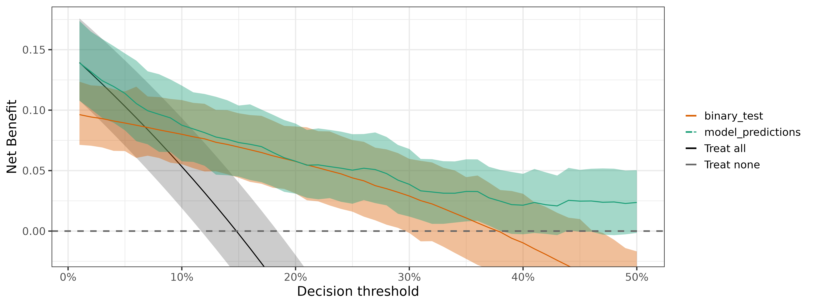
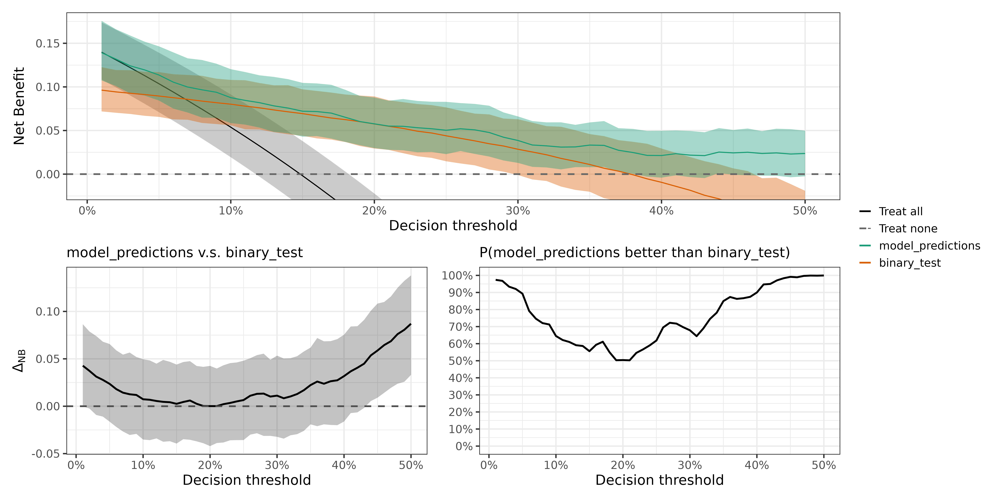

To illustrate Bayesian DCA on survival data, we load the example
dataset dca_survival_data shown below.
library(bayesDCA)
head(dca_survival_data)
#> outcomes model_predictions binary_test
#> 1 0.2948349+ 0.18806301 0
#> 2 1.8747960+ 0.25349061 1
#> 3 0.0355183+ 0.01025269 0
#> 4 1.2850960+ 0.04836840 0
#> 5 0.2398763+ 0.23502042 1
#> 6 2.0934150+ 0.04611183 0The dataset contains the time-to-event outcomes (a
survival::Surv object), the predictions from a prognostic
model, and the results from a binary prognostic test. The time horizon
for the event prediction is one time units (e.g., year), so we set
prediction_time = 1. We also set cores = 4 to
speed up MCMC sampling with Stan.
fit <- dca_surv(dca_survival_data, prediction_time = 1, chains = 1)
#> Survival estimation with the following intervals (total event counts):
#> [0,0.05]: 12 (0.05,0.1]: 14 (0.1,0.25]: 10 (0.25,0.5]: 16 (0.5,0.75]: 13 (0.75,0.9]: 4 (0.9,1]: 6 (1,Inf): 30
plot(fit)
Interrogating the output
We can do all kinds of output interrogation just like with binary outcomes.
Is the model better than the test?
compare_dca(fit,
models_or_tests = c("model_predictions", "binary_test"),
type = "pairwise")